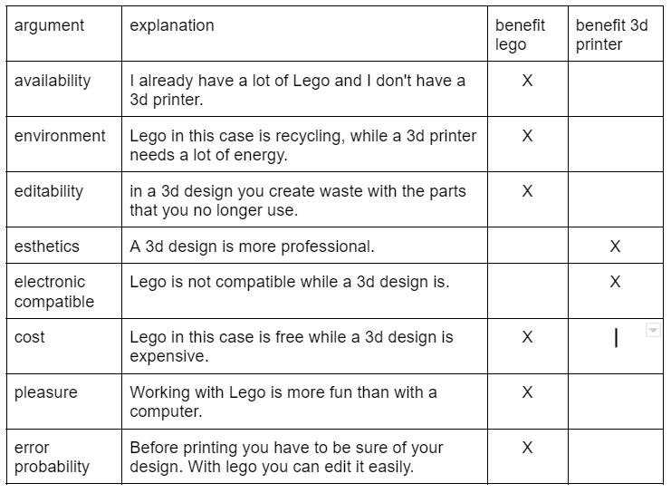

objective
Issue
Reasearch Questions
So the ultimate goal is to make a robot that can win a darts game. So I will try to answer the following questions:
How does initial speed affect accuracy? How does the firing angle affect the accuracy? How does shooting distance affect accuracy? What is the general accuracy of the canon? To what extent is it better or worse than a professional player?
How does initial speed affect accuracy? How does the firing angle affect the accuracy? How does shooting distance affect accuracy? What is the general accuracy of the canon? To what extent is it better or worse than a professional player?
hypothesis
I have never seen a robot that was built to automatically play darts, so it will certainly not be easy.
But I think it is feasible. In this video we see an industrial arm robot throwing a dart. It is important
to note that the robot is not designed to throw a dart as its primary purpose. Also, the creator of the robot
had a lot of resources, which I don't have. My robot would be different in that sense, because the robot's
primary purpose will be to play darts.
My hypothesis is that the accuracy decreases the further the projectile is thrown. I also think the robot is most accurate when the darts and board are perpendicular to each other after firing. That depends on the height of the robot and the board, so you have to adjust the initial speed and the shooting angle.
Overall accuracy I think depends on several factors. I do think my robot will be more accurate than a person who darts regularly. But whether he will be better than a professional player, I doubt.
My hypothesis is that the accuracy decreases the further the projectile is thrown. I also think the robot is most accurate when the darts and board are perpendicular to each other after firing. That depends on the height of the robot and the board, so you have to adjust the initial speed and the shooting angle.
Overall accuracy I think depends on several factors. I do think my robot will be more accurate than a person who darts regularly. But whether he will be better than a professional player, I doubt.
Background
Darts
For this research assignment I use an electronic dartboard. The goal is for the robot to win a 301 game.
The aim here is to get from 301 to exactly 0 points as quickly as possible in series of triplets. If you
fall below 0 points, you have to start back where your previous triplet ended.
You can make doubles and triples by firing into the outer and inner circle respectively. Normally, the aim is to finish with a double. However, I'm not going to work with that rule.
You can make doubles and triples by firing into the outer and inner circle respectively. Normally, the aim is to finish with a double. However, I'm not going to work with that rule.
Preparation
Handling way
My research assignment follows the trial and error method.
 The intention will therefore be to make the robot step by step. With each prototype I will determine
whether I am closer to my goal or not. If not, I'll have to determine what went wrong and see how I can fix it.
If the solution is effective, then I can work on the next step to reach my goal.
The intention will therefore be to make the robot step by step. With each prototype I will determine
whether I am closer to my goal or not. If not, I'll have to determine what went wrong and see how I can fix it.
If the solution is effective, then I can work on the next step to reach my goal.
Because it is a large, complex project, it is important to divide it into steps. I will therefore first investigate which system is most adapted to shoot a dart. The intention is then to make the frame of the robot. To which I can then add the electronics and the code. This will also be done in steps by first controlling the canon through arduino and then gradually automating it by a raspberry pi.
Because it is a large, complex project, it is important to divide it into steps. I will therefore first investigate which system is most adapted to shoot a dart. The intention is then to make the frame of the robot. To which I can then add the electronics and the code. This will also be done in steps by first controlling the canon through arduino and then gradually automating it by a raspberry pi.
Material
I could use both a 3d printer and lego to make the robot. So I first had to see which
one is most adapted to my project.
So I will work with Lego. More precisely with lego technic. These are
also better adapted to the trial and error method I use.

Planning
I started this research assignment in October. The official deadline is June 31.
Execution
Finding the right system
There are several shooting systems that I could use to throw a dart. That the raison why I will first determine which
one is the best, in my example.
So I'm going to first look at the positives and negatives points of different shooting systems.
(*) learning opportunity 1 :
The idea is to make a canon that only moves the darts and no other parts like the arm of a trebuchet. That ensures better efficiency.
(**) learning opportunity 2:
Because the elastic of a crossbow forms a triangle, it is impossible to place Lego parts in the entire triangle. That means that it is difficult to make the canon strong enough.
Here are some prototypes that were made:


In the end, I could conclude that the slingshot is the best shooting system in the first place. However, that will have to be ensured with the next prototypes.
All Arduino codes can be found on my github page.
PART 2 of robot
The idea is to make a canon that only moves the darts and no other parts like the arm of a trebuchet. That ensures better efficiency.
(**) learning opportunity 2:
Because the elastic of a crossbow forms a triangle, it is impossible to place Lego parts in the entire triangle. That means that it is difficult to make the canon strong enough.
Here are some prototypes that were made:
In the end, I could conclude that the slingshot is the best shooting system in the first place. However, that will have to be ensured with the next prototypes.
All Arduino codes can be found on my github page.